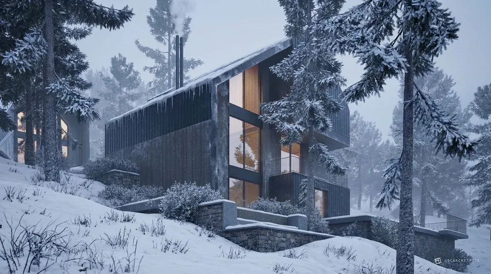

Villa Dve Koraćica, Kosmaj
Koraćica, Kosmaj, Serbia, 2026
Two independently designed single-storey villas stand in the quiet landscape of Koraćica, at the foot of Mount Kosmaj. They are placed to follow the gently sloping terrain and to open towards the views of the surrounding woodland. The buildings cover just over 20% of the plot, so green space stays the main character of the property.
Both houses have clean lines, flat roofs and a warm material palette: decorative silicate render combined with ventilated Siberian larch cladding. Inside, the layouts are open and bright, with living areas under three-metre ceilings that open onto large terraces and private swimming pools.
The houses are built as a prefabricated timber-frame system with good thermal and acoustic performance, with underfloor heating and utility spaces integrated in the basement.


Plans
